EdukaChika is a group composing of 6 members, all with a goal of knowing one thing. What study method is best for you?
Each student is unique—and each learner has different ways of learning. From visuals, like creating graphic organizers, mindmaps, or infographics to learn something, auditorial learners who learn through listening, kinesthetic learners who learn hands-on, to the reading/writting learners. As you can see, there are many types of learners, and with many types of learners, there are also a over a wide variety of study methods for each kearner to use.
TikTok is an application where people can create videos regarding anything under the sun— A sub-community: StudyTok is one of the many popular sub-communities on the app, with over 7.4 billion views under the hastag; it shares ways on how you can ace your test, improce your essays, best ways to improve memory retention, how to solve a certain math equation, and what up-coming college students can expect once they enter it, those are just some of the many topics that are being talked about on StudyTok. EdukaChika wants to find out which study method popularized on TikTok is actually effective for junior highschool students, at the same time EdukaChika plans on discussing the different drawbacks to the study method, and members would rate how effective it was for them, and if they would recommend it to others.
GOALS:
EdukaChika's goal is to:
a.) find out what study methods popularized on TikTok work for each differing learner.
b.) Be able to give opinions, and experiences with using study method.
c.) Be able to test what is the best study method.
d.) Aims to
MISSION:
EdukaChika's mission is to be able to create a healthy environment for studying, and be able to make something many students dread, to something that can be fun. Furthermore, EdukaChika aims to spread awareness on internet
trust. Lastly, EdukaChika aims to investigate what study method is best for each learner through answering of online tests on-air.
WHAT IS STREAMING?
In a nutshell it's filming in real time. May it be you playing games, chatting with viewers or people, or doing anything!
The continuous transmission of video data from a server to a client is known as video streaming. Video streaming allows users to interact with their clients. Users may watch videos online without having to download them. Movies, TV shows, YouTube videos, and live streamed material are examples of streaming video content. The continuous transmission of audio and video data from a server to a client is referred to as streaming. Content in video broadcasts is transferred in compressed form via the internet and is viewed in real time by the viewer.
DIFFERENT CONTENT TYPES
There are tons of different streaming content that can be seen in the streaming world.
These are:
Podcasts
Webcasts
Movies
TV Shows
Music videos
Gaming
Q&A’s
Interviews
Vlogs
Tutorials
News
Events
PLATFORMS USED IN STREAMING
Since live streaming has become more popular amongst the people nowadays, there are tons of streaming platforms that were created that people can use in order to stream their preferred content. These are some of the platforms that can be used for streaming:
YouTube
Twitch
Facebook
Instagram Live
TikTok Live
Kumu
Bigo Live
CHOSEN CONTENT TYPE
Going beyond the conventional method of testing, the group has opted to conduct the study using a mixture of different content types. Mainly, podcasts, QnAs, and studystreams, but the group will mainly focus on studystreams. The objective of this activity is to determine if all, or any, of those study methods popularly shared by the StudyTok community actually works. The subjects of the study has been assigned different study methods, after which an online test will be conducted, to check for retention and efficiency.
CHOSEN STREAMING PLATFORM
As per the topic we have chosen— the team believes that "YouTube", and or “TikTok” is the right platform to stream in. In correlation to the research topic of finding out if StudyTok tips and tricks are effective in improving a Junior Highschool student's study habits—YouTube/Tiktok are the most appropriate app for streaming. However, YouTube seems to be the easiest to operate streams on.
WHAT DID THEY THINK?
WHAT'D THEY THINK?
Survey Responses.
Click on the Images to Make
Them Bigger
DEMOGRAPHIC
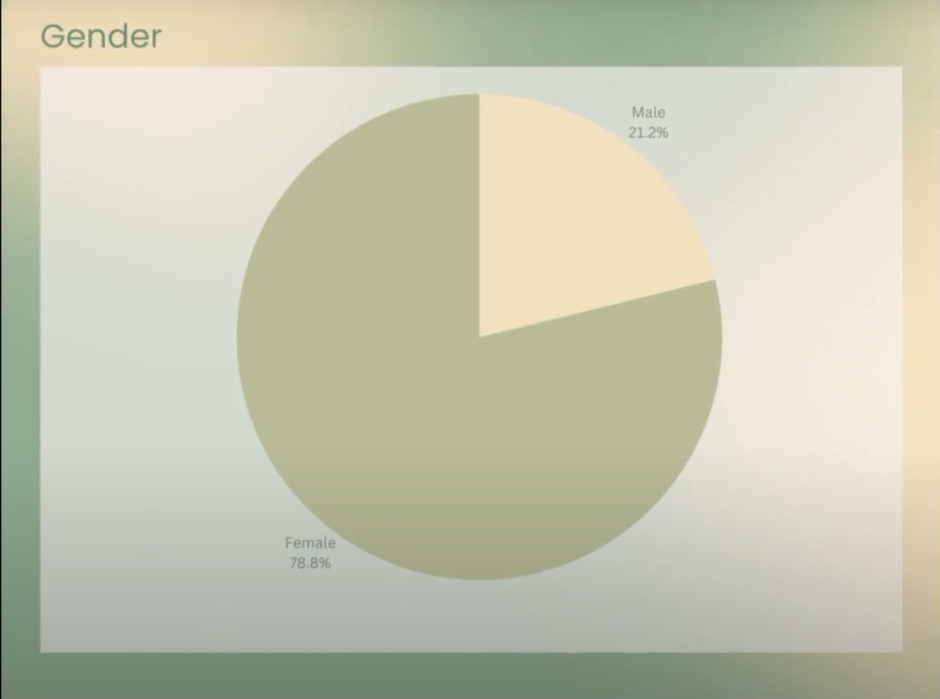
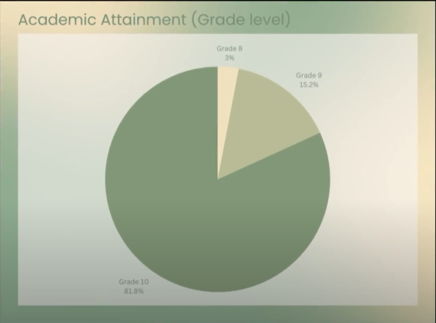
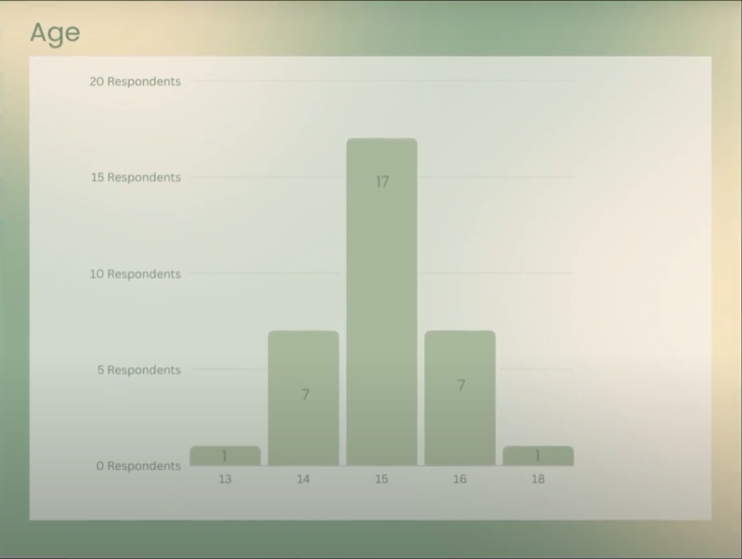
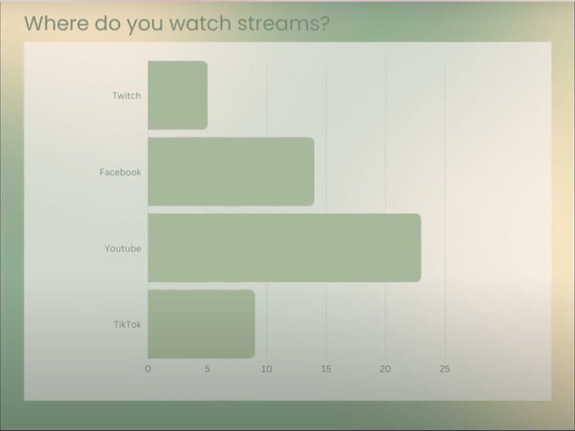
DATA INTERPRETATION
Based on the survey the group has provided, which, aside from asking personal questions, it also asked about the respondents' preferred streaming content type, with focus on our research topic. See the image below as reference
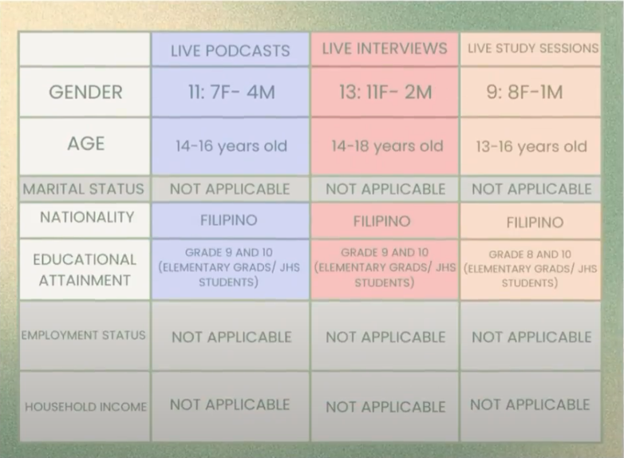
BELIEFS AND OPINIONS ON THE TOPIC
Most respondents (39.4%) (13 respondents) answered live interviews/ QnAs because they would like to get to know a person and their thoughts and opinions on something or someone.
Second content type taking lead– Live podcasts. 33.3% (11 respondents) of the students want to listen to podcasts because most of them want to listen in on the speakers' opinions on something.
Lastly, 27.3% (9 respondents) of students chose to study streams because they would want someone to study with. To keep themselves company.
48.5% of the respondents were familiar with the term/ sub-community called “StudyTok”.
51.5% of the respondents were not familiar with the term/ sub-community called “StudyTok”.
For those who were familiar with StudyTok; the survey made the respondent's rate how much StudyTokk has helped them improve their study habits (scale of 1 - 5; 1 being the lowest and 5 being the highest)
6.3% responded with 1 (Did not help in improving my study habits at all)
None have responded with 2 (I picked up 1 or 2 study habits)
18.8% responded with 3 (Has somewhat helped in improving my study habits)
43.8% responded with a 4 (Picked up a significant amount of study habits/ ways of improving study habits)
31.3% responded with a 5 (has helped very much in improving my study habits)
NEEDS OF VIEWERS
A. Chosen Content Type
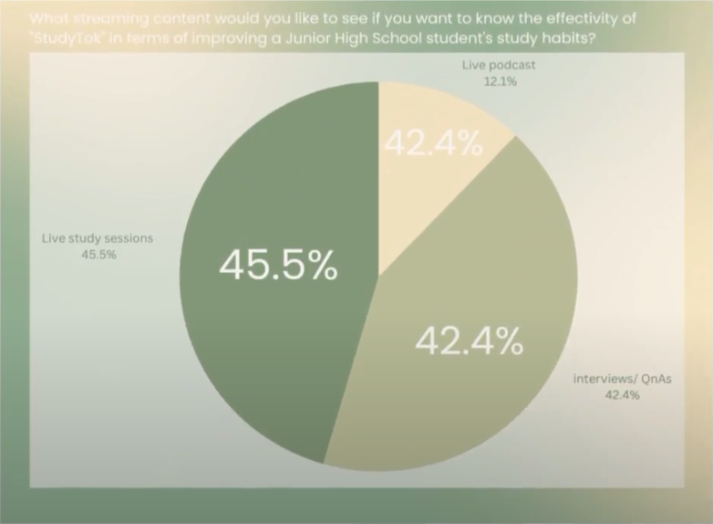
Based on your audience analysis, choose a streaming category/type that is appropriate to the topic.
As per the answers in the survey, JHS students would much prefer a study live stream wherein each member would test out a study habit/ practice popular on TikTok, and using those study methods, each member will study the same topic, and by the end of it, the group will have a quiz regarding the topic studied, in order to see what method is more effective.
We are not, however, closing our doors to other types of streaming content– such as interviews, and just chatting with our audience about school-related things, etc…
Going beyond the conventional method of testing, the group has opted to conduct the study using a mixture of different content types. Mainly, podcasts, QnAs, and studystreams, but the group will mainly focus on study streams. The objective of this activity is to determine if all, or any, of those study methods popularly shared by the StudyTok community, actually work. The subjects of the study has been assigned different study methods, after which an online test will be conducted, to check for retention and efficiency.
B. Using The Empathize Stage In The Design Thinking Process
INSTRUCTIONS:
1.) Use the techniques in the Empathize stage of the Design Thinking Process to find a need of viewers in the streaming category that you chose.
2.) Maximize the different techniques of the empathize stage.
3.) Use the methods of basic research to identify the reason why people of different ages, statuses, beliefs, etc. watch the streams they watch.
4.) You can perform research, interview people, and even perform surveys, just make sure that it will not require you to go out of the house.
SHARING EXPERIENCES AND OPINIONS
People, most specifically, Junior High School students watch study sessions, because the thought of someone “studying with you” keeps them company and makes them comfortable. Based on the interviews conducted via gmeet calls with some of the respondents:
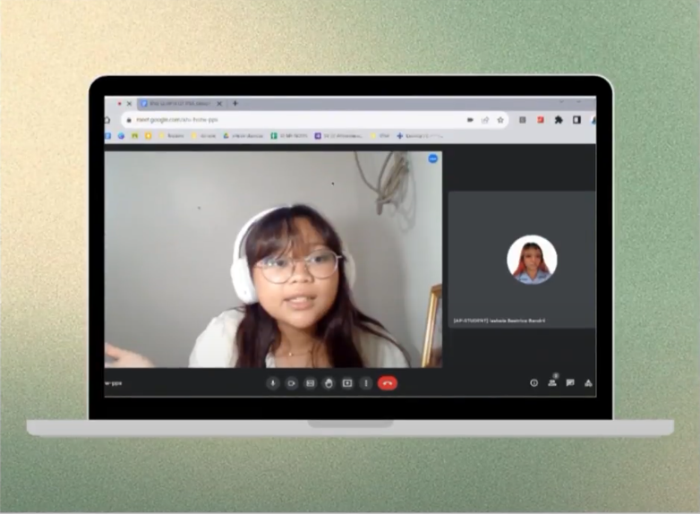
As per one of the respondents: She chose live study sessions because she would want to see if TikTok study tips were truly effective, and she would want us to serve as testers. She finds watching live study sessions fun because it motivates her to study with the live streamers.
In addition, another interviewee had also mentioned that Studystreams bring me comfort—I kinda feel like I'm with friends studying in a cafe. Plus, I really like the fact that your group is gonna be studying differently, and I think it's pretty exciting!
CHARACTERISITCS OF A GOOD STREAM
To execute a quality -worthy streaming, a creator needs to exhibit a number of attributes. Here are some characteristics:
Presentable streamer - Making a good first impression always starts with appearance! To increase views, it is essential to do this. One gains a lot of self-confidence and speeds up the development of his career by maintaining a respectable physical appearance and using proper etiquette. It's crucial to keep your content open to all audiences since we must also be conscious that the age range of our visitors may vary.
Ability to create good content - People are more inclined to visit your channel if you your contents with higher skill. People will be interested in seeing more if you pull off an outstanding shot, performance and ability.
Interesting content - Look for opportunities to make jokes or call attention to anything amusing by being creative and proactive in your quest. Many outstanding streamers have become well-known by making people laugh and being amusing.
Accessible stream - Convenience for our viewers is provided via accessibility. Your channel's follower count can grow as a result of greater exposure. Accessibility will make it simpler for users to search and share live content on your channel. They will need to share your content quickly so that their friends can also see it because it necessitates rapid action.
Regular uploads - Consistency is the best strategy for getting viewers to return to your channel, thus it's advised to create a routine for when and how often you'll upload so that people will know when to watch your live streams.
Engaged with viewers/other streamers - Since many viewers prefer a more personal relationship with you than merely watching the streamer, engagement with viewers is crucial. Try to work with other streamers to increase your chances of being noticed or discovered because both of your viewers and theirs may be interested in you.
WHAT'S OUR CONTENT?
The group started this quarter off by choosing which streaming tools were necessary. The picture below is a venn diagram the group used in debating what streaming tool was best. It was boiled down to the decision of OBS or Twitch Studios.
After assessing the differences, and similarities between our 2 chosen streaming software: OBS and Twitch Studios, we opted to go for OBS. It has more capabilities, and it is perfect for the group to use for streaming. The OBS Software includes a wide range of plug-in support. It is flexible and has direct integration with a variety of streaming platforms.
Since the software is free, the startup costs little to nothing. Because it is very flexible and multi-platform, we can deploy it to a broad range of devices as needed without having to worry about licensing.
PERSONAL EXPERIENCE OF A MEMBER
Furthermore, a member is already familiar with OBS and has used it for a year now. He testified that it was beginner-friendly.
Furthermore, streaming equipment to be used for recording would be a device of a member, see the specs of the device below:
1.) Ryzen 5 3400G
2.) 16GB RAM DDR4
3.) 120GB SSD and 500GB HDD
4.) AMD Radeon Vega 11 Graphics (GPU)
The streaming platform to bee used would be YouTube, this is the group’s Channel:
The group’s content would be classified as “studystream”. See the group’s mind map below, to better understand:
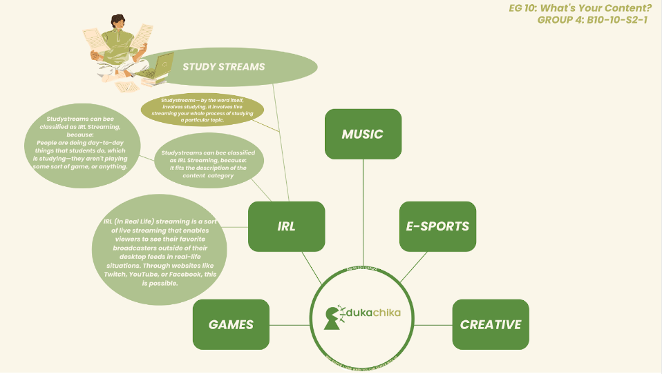
Of course, with the channel having study streams as the category, the topics would revolve around studying. But, with an interesting twist! The group will be testing out which study method popularized in the sub-community (in TikTok) “StudyTok” are effective.
Here's the Group's Logo:
The green-blob serves as a symbol of a person chatting, in line with the name of the group’s channel “EdukaChika” which plays with the Filipino words - Edukasyon (education), and ‘Chika’ (talking/ conversation).
The group guarantees that the Privacy policy Act of The Philippines–Under R.A. 10173, your personal data is treated almost literally in the same way as your own personal property. Thus, it should never be collected, processed and stored by any organization without your explicit consent, unless otherwise provided by law.
STREAM TIMELINE
In the streaming outline, the group created a storyboard to perfectly visualize the flow of the stream. See the images below:
The stream will be divided into three main parts:
a.) Pre-Stream
b.) Mid-Stream (Pre-Study)
c.) Post-Study Sesh
a. Pre-Stream
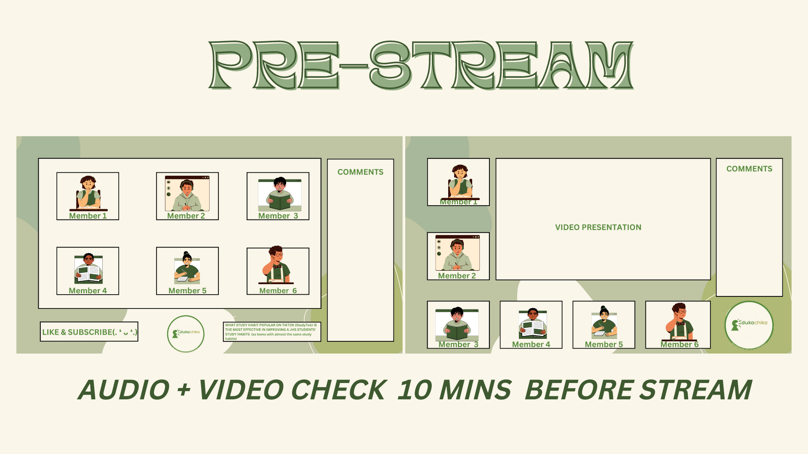
10 minutes before the camera roles the team would check their camera quality, screen share quality, and audio quality. This portion may be extended or shortened depending on the difficulty of the problem shoot.
This screen will be flashed for the first 5 minutes of the stream for idle time to gain viewers. The group will be playing copy-right free music for the audience to be entertained while idling.
b. Mid-Stream/Pre-Quiz
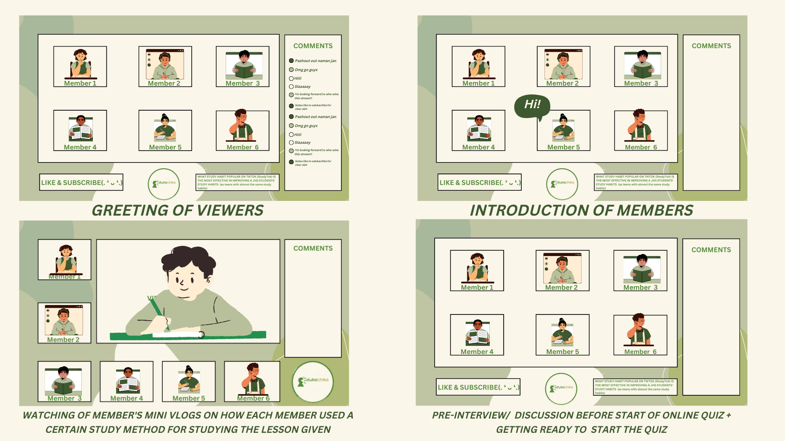
After the pre-stream, the group will now be entering into the “Mid-stream”, this phase is also called the “pre-quiz”-- In this portion of the stream, the group will be greeting the viewers, briefly introducing the purpose of EdukaChika, introducing the members, and having a quick watch of everyone’s pre-recorded mini vlogs (the vlogs would be around 3-5 minutes long). The vlog will be containing the experience of the members with studying the topic in a whole different study method from what they are used to. After the watching of mini-vlogs, the group would then have a pre-interview, wherein the following questions would be asked:
1.) “What did you find challenging about the study method assigned to you?”
2.) “How did you feel about the topic being studied?”
3.) “Are you ready for the 15-minute quiz?”
Note that more questions may be asked, but these are the main questions that the group should answer.
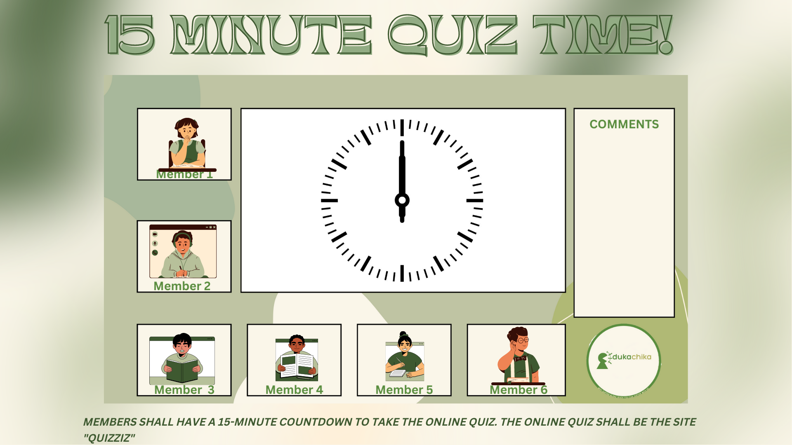
Once those questions have been answered,
The group will immediately proceed to take
The 15-minute quiz, simultaneously someone
from the group will be screen-sharing a timer
To maintain punctuality.
The quiz may be held via Quizziz, Kahoot, or
Google forms.
c. Post-Study Sesh
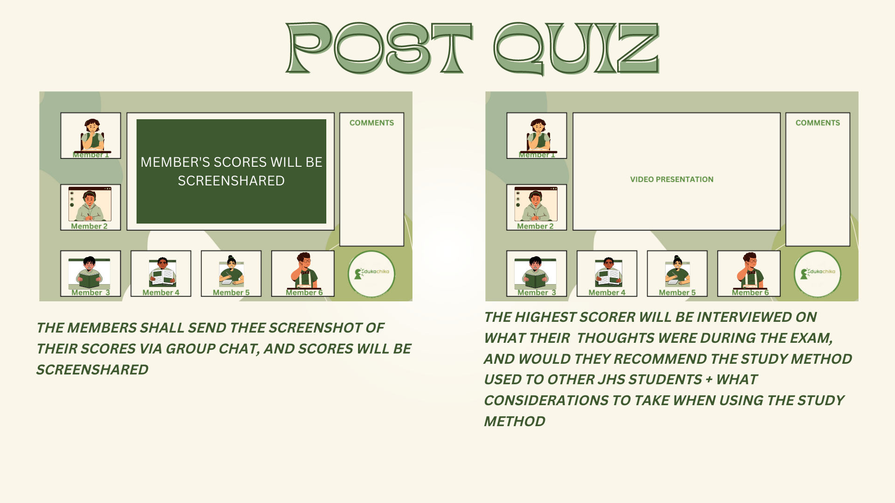
The members would all be sending their respective scores to the group chat created, one member would screenshare all of the results. After the scores have been showed, members will exammine who the highest scorer is, and members would be asking the following to the highest scorer:
1.) “What were your thoughts during the quiz?”
2.) “Would you recommend this study method to other JHS students in hopes of improving their study habitt?”
3.) “On a scale of 1-10 how effective was this study method for you?”
4.) “What considerations did you take when using this study method?” (For example:: The highest scorer used the Pomodoro method in studying, the member must’ve considered the time, and hours that they are most active in studying in.)
Shortly after those questions have been answered by the member, the group will proceed to have an interview with everyone in the group. The questions to be asked would be about the topic that was quizzed, discussions and rating of study methods, and thoughts about the stream. Furthermore, this would be a good time for the group to interact with the audience, and ask them questions as well.
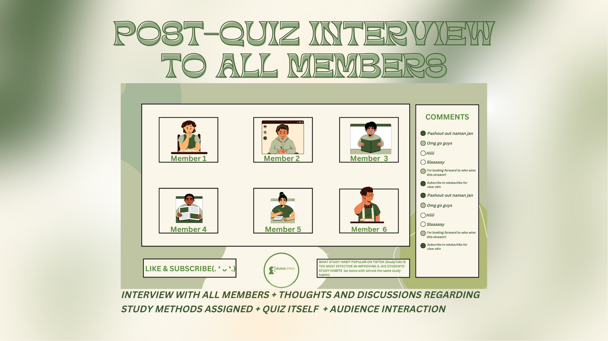
After that, the group will proceed to their outros.
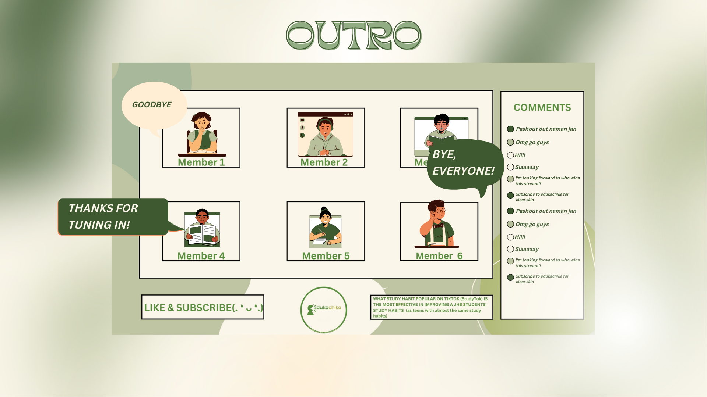
The stream will be no more than 1 hour.
GROUP INVITATION
The poster is set to be as realistic as possible, in line with our audience demographic. So that our audience can feel more comfortable, and cool with the group. You, the person reading this, can always join us in our studies and chikas!
STREAM ANALYSIS
I. Summary of Stream
The stream centered around studying. Specifically, it focused on the effectiveness of various study methods that are well-known online, particularly on the TikTok platform.
The group conducted a live stream on YouTube, the group started their live at 11:00AM, but the official start was around 11:05 AM. The stream ended at exactly 12:25N.
Prior to the stream starting– one member of the team assigned all the members a study habit popularized on Tiktok, to follow. Then, the team was asked to film themselves while studying the materials given to them– the topic of the exam focused on Greek mythology, Psyche and Cupid, in line with Valentine’s day fast approaching. The group took the exam as a whole.
During the whole stream, the group stuck with the original storyboard timeline (Appendix B). The group started out by greeting the audience, and occasionally shouting out viewers– the group then proceeded with mentioning the giveaways to hook the audience (one-hundred pesos for two viewers that followed the criteria).
The group proceeded with the discussion of the study methods assigned to each group member. Then, the group watched the “Appendix B”, wherein a timelapse was shown of the group showing off their study methods, and taking the exam as a whole. Furthermore, the group has discussed some questions with regards to the quiz– “How easy was the quiz?”, “What problems did you encounter?”, were some of the questions included in the “post-interview”.
Here are the screenshots of the team’s individual scores: Appendix C.
The highest scorer was Sofia Bianca, a visual learner, and she got tasked with learning through the ”Blurting technique”. Then, the viewers that won the giveaway were Sarisha Ortega, and Angelika Juanillo.
After the entirety of the stream, the team asked the viewers to answer a short feedback survey.
Figure 1:Stream timeline
TIMELINE SUMMARIZATION: (Appendix D)
a. During
b. Greeting of audience
c. Mention of giveaway
d. Discussion of study habits
e. Test scores
f. Post interview
g. Game show: Giveaways
h. End of stream
ENGAGEMENT SUMMARIZATION
The livestream had garened over one hundred ninety one-views. The group had the most viewers coming from the google mails, and the Facebook posts the group had been sharing.
Figure 2: External sites or apps where viewers found the stream
The group had three hundred thirteen (313) impressions, and a 5.4% impression click-through rate. Therefore, only sixteen (16) of the three hundred thirteen (313) viewers viewed the group’s live stream. The group had thirty-three viewers since the stream was published. Twenty-one (21) is the peak viewers that the group had. Lastly, the group peaked at the six-minute mark, wherein the mention of a two–hundred peso giveaway was being awarded to two viewers.
II. What Went Well
Days before the stream was set in motion, the team did an excellent job of promoting the scheduled live stream using Edukachika's social media platforms. (Facebook, Instagram, TikTok, and Youtube). Countdown posters were continuously uploaded in order to garner an audience. The flow of the stream was neatly organized and discussed beforehand. With that, all of the presenters understood what needed to be done.
A dry run was successfully completed a few hours before the official stream. In the course of that time, a technical member checked the entire stream layout structure to guarantee that it worked as intended in the broadcasting program utilized. Each team member also took this time to ensure that their audio and camera were functioning properly.
After the meticulous preparation of the aforementioned live stream, the broadcast began at the planned hour. All segments were delivered in accordance with the storyboard timeframe. Begin by greeting the audience, introducing the members, and providing a brief overview of Edukachika and the activities that will take place during the event.
The documentary video comprises footage of each member studying using their designated study method and the whole group answering the quiz was presented on the screen. Then after, as per the request of the audience, the scores of each participant was revealed, which served as a checkpoint for each participant's overall experience and a determination of whether or not the study methods they undertook were successful.
The group played a family feud game with the theme of love to close off the stream and awarded cash rewards to the audience winners. Thereafter, farewells were said and the steam ended.
III. Missed Opportunities
A sudden problem with the tech's connection occurred halfway through the
stream, causing the stream to lag and eventually coming to an end visually. The team decided to stop the stream even though it could still be heard and continue the giveaway through Google Meet, where most of the viewers joined as well. If only there hadn't been any technical issues, the stream would have ended without problem.
In accordance with what actually occurred, the group lost the chance to continue the entire segment of the stream. Taking into account that the problem arose before the interview was complete.
It was noticed a little bit too late because apparently the stream had been lagging for some time before it froze. Considering that their team consisted of just one technical person—who was also the one streaming, adjusting the layout, and managing everything online. The technical person had been having connection issues because of handling everything on his own, which led to the stream completely breaking down.
The team did not have a backup plan in case what happened occurred, which indicates that they did not anticipate any problems with their stream. The stream would have gone smoothly if the team had chosen to double the number of their technical team and had thought ahead to a backup plan just in case
IV. Stream Analysis
The members of Educhika strived to get the most viewers possible. It centered around a group of people who are close to their age: including classmates, schoolmates, and close friends. The strategy by the group was to spread the news to different and multiple group chats/audiences. These group chats were under the school’s name, as it is group chats of schoolmates. Moreover, the group didn’t end their gathering of viewers there; with the use of their platforms, they maximize their potential by promoting their very own stream. Examples are posting their allotted date and time of their stream (Facebook and Instagram), and each member promoting their stream using their own personal account.
The livestream had garened over one hundred ninety one-views. The group had the most viewers coming from the google mails, and the Facebook posts the group had been sharing
Figure 1:External sites or apps where viewers found the stream
The group had three hundred thirteen (313) impressions, and a 5.4% impression click-through rate. Therefore, only sixteen (16) of the three hundred thirteen (313) viewers viewed the group’s live stream. The group had thirty-three viewers since the stream was published. Twenty-one (21) is the peak number of viewers that the group had. Lastly, the group peaked at the six-minute mark, wherein the mention of a two–hundred peso giveaway was being awarded to two viewers.
Below is the summarization of data, with provided graphs.
Figure 4:AGE DEMOGRAPHIC OF RESPONDENTS
All of the group’s respondents are at the age range of 11-17 years old.
Figure 5: RELATIONSHIP OF RESPONDENTS TO STREAMERS
57.1% of the respondents were classmates and 42.9% were friends of the streamer. The group cascaded the stream link on social media, and the group also cascaded this information to their classmate via foot trafficking, and with the use of Google chat.
Figure 6: NEW INFORMATION TO THE RESPONDENTS
0 respondents (0%) had answered “1”, meaning none of the information from the stream was new to them.
1 respondent (14.3%) had answered “2”, meaning SOME of the information from the stream was new to them.
1 respondent (14.3%) had answered “3”, meaning HALF of the information from the stream was somewhat new to them.
2 respondents (28.6%) have answered “4”, meaning MOST of the information from the stream was new to them.
3 respondents (42.9%) have answered “5”, meaning ALL that the information from the stream was new to them.
Figure 7: GRAPH OF WHEN RESPONDENTS WOULD APPLY THE LEARNED INFORMATION
All of the respondents agreed that you can use this streaming information immediately. A plausible explanation for this immediate use is because of the fact that most of the group’s viewers are students, and therefore these study habits may help them out a lot.
Figure 8: GRAPH OF HOW MUCH THE RESPONDENTS WOULD WANT TO HAVE ANOTHER EPISODE OF THE LIVE STREAM
85.7% of the respondents answered “Yes”, while 14.3% were “No”. 1 respondent answered no, and this may be due to the fact that the group had encountered a technical issue in the midst of the stream. However, EdukaChika is improving with every mistake made. 6 respondents answered “Yes”, this is due to the fact that the team engages with the audience, continually shouts them out, and gives prizes.
Figure 9: KNOWLEDGE OF STREAMERS IN THE TOPIC
All the respondents answered 100% Excellent rate to the streamer's knowledge.
The group had researched their study plans beforehand, and the fact that the group is composed of students makes the study habits on “StudyTok‘ even more applicable, and relevant to them. ThereforeTherefor, the group knows most of the information that they are talking about, because they have learned and applied this in real life.
Figure 10: Data according to “Do you find this streaming content relevant to address solutions, issues or challenges in our lives.”
85.7% of the respondents answered “Yes” while 14.3 answered “Maybe”.
Most have answered “Yes'' due” due to the fact that many students come across issues in their studies. Many students are not aware of what study method is appropriate for them. A modern issue that EdukaChika is trying to solve is the Legitimacy of information on the internet, and weather study methods popularized on TikTok do work, and if it does, how would it affect the academic performance of junior high school students?
Figure 11: Data according to the rate of streamers' ability to engage:
85.7% of the respondents answered “Excellent” while 14.3 answered “Good”. The group is engaging, and continually asks the audience for their opinion– therefore, most of the respondents answered “Excellent”.
Figure 12: Data according to the rate of the design of the stream:
85.7% of the respondents answered “Excellent” while 14.3 answered “Good”. The stream design was bubbly, appropriate, and cute–and the grou was glad that most of the respondents agreed with the stream’s design.
Figure 13: Data according to the time and length of the stream:
All respondents answered 100% Excellent. The group had streamed for a total of 1 hour. Which is typically the usual time that most streamers silver stream.
Figure 14: Data according to the platform venue of the stream:
All respondents answered 100% Excellent. The group’s chosen platform to live stream in was YouTube– YouTube is an accessible application for everyone, and all the viewers had no issue with accessing the group’s live stream.
Figure 15: Data according to the accuracy of the streaming session outline:
85.7% of the respondents answered “Excellent” while 14.3 answered “Good”.
The flow of the stream to most viewers was smooth, and clear, and segued at the right times.
Figure 16: Data according to the comparison between streaming session and expectations:
5.7% of the respondents answered “Excellent” while 14.3 answered “Good”.
Thee group believes that the stream was good, but if the group had not encountered technical issues, then maybe all of the respondents had answered ”excellent”.
Figure 17: Data according to the overall streaming session evaluation:
85.7% of the respondents answered “Excellent” while 14.3 answered “Very Good”. Most had respoonded with an “Excellent”, and 1 respondent had answered “Good”, because tthe stream would occassionally lag, but thhe things that the group talked about wasas clear.
Figure 18: Data according to “How likely are you to recommend this streaming session to friends, classmates, family or relatives?”
2 respondents have answered “9”, while 5 answered “10”. Moost of the respondents had a positive feedback, and most would reccommend this to a friend, or a classmate, family, or relative.
Figure 19: Data according to “Things to improve in our stream.”
Most of the respondents had mentioned that everything was all good, but the group needs to focus more on improving the technical side of things.
V. Conclusion:Why did EdukaChika gain 191+ views in their stream?
There are numerous reasons as to why the team’s viewership was successful. Here are some of the reasons as to why the team has garnered such number of viewers
A. The streamers themselves
With the member’s individual fun, quirky, and energetic personalities, it was no shock that their live stream has garnered over one-hundred ninety one views, since it was last streamed. With the personalities of each member, the team got to interact with the audience frequently and spontaneously.
B. Visuals and layout of the stream
Along with the members themselves, the visuals and the layout of the stream was cute, and bubbly, which the team strongly believes could also be a benefactor as to why the stream has garnered so many views.
C. Interest of the viewers in the topic
Another reason could be the mere fact that the viewers themselves were interested in knowing whether study methods on Tiktok are truly effective for each member with different learning styles.
D. Advertising
Lastly, another benefactor as to why the stream has garnered views was due to the fact that the advertising was on point. The team has greatly put in effort in promoting the stream, and foot-trafficking. Especially with the promotion of a one-hundred peso giveaway to two viewers.
Overall, the team has really enjoyed their live stream, and is looking forward to the next stream. Using the mistakes of the last stream– the team will use it to effectively create a better stream. The team thanked their viewers for joining, and for supporting EdukaChika.
The group had a post-stream meeting. Each member mentioned how they felt about the stream–One member from the group, Ester Rahcel, had mentioned that: “I really liked the entire stream and how active the viewers were; I loved how both the streamers and the viewers share the same enthusiasm. As previously said, the streamers' personalities or the streamers themselves are the reason for the relationship. The viewers were really pleased with what our group has accomplished; they liked the overall flow of the program and how the group transformed it into a very interactive and engaging stream. We were surprised by the amount of excitement and support from the audience, and we thoroughly loved it!”
The team has yet to conclude the most effective study habit of each learner, until then, the team continues to study and strive for accuracy, and for authenticity.
RE-STREAM
I. SUMMARY OF STREAM
--
As the academic year is finally coming to an end,
--
When you hear of the word "Senior High School", what's the first thing that comes to mind?
What's your strand and why?
What are your goals for SHS?
What are the things you want to develop in SHS?
How would you describe your last year of JHS?
Watching of interview
Discussion of interview
QUESTIONS
What is your biggest key takeaway from the video?
Are you ready for college?
What are some fears you have for SHS?
Imagine that your future self is watching this very playback of the live stream, what would be your message to yourself?
Announcement of Winners
Outro
ENGAGEMENT SUMMARIZATION
The livestream had garened over one hundred ninety one-views. The group had the most viewers coming from the google mails, and the Facebook posts the group had been sharing.
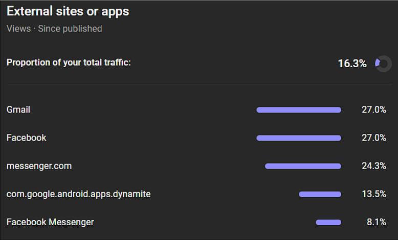
Figure 2: External Sites or Apps Where Viewers Found the Stream
The group had three hundred thirteen (313) impressions, and a 5.4% impression click-through rate. Therefore, only sixteen (16) of the three hundred thirteen (313) viewers viewed the group’s live stream. The group had thirty-three viewers since the stream was published. Twenty-one (21) is the peak viewers that the group had. Lastly, the group peaked at the six-minute mark, wherein the mention of a two–hundred peso giveaway was being awarded to two viewers.
II. WHAT WENT WELL
With a lot of planning, and loads of dedication–the group set out on an adventure! The adventure being going to the house of one of the members. The streamers were able to go to one location successfully, and all were safe.
In comparison to the last stream– the second stream went well! There were little to no technical issues, nor any conflict. The group had fun, and spent the whole time just learning about each other.
The stream ended with a good laugh– the streamers enjoyed it, and the viewers did as well.
III. MISSED OPPORTUNITIES
There was little to no missed opportunities– apart from the fact that the stream started a bit late. The stream ws supposed to start at around 10:30AM, however some members arrived late, therefor the stream started at 11:00AM– the streamers posted on Facebook about this, though.
Streaming Analysis
The members of Educhika strived to get the most viewers possible. It centered around a group of people who are close to their age: including classmates, schoolmates, and close friends. The strategy by the group was to spread the news to different and multiple group chats/audiences. These group chats were under the school’s name, as it is group chats of schoolmates. Moreover, the group didn’t end their gathering of viewers there; with the use of their platforms, they maximize their potential by promoting their very own stream. Examples are posting their allotted date and time of their stream (Facebook and Instagram), and each member promoting their stream using their own personal account.
The livestream had garened over one hundred ninety one-views. The group had the most viewers coming from the google mails, and the Facebook posts the group had been sharing.
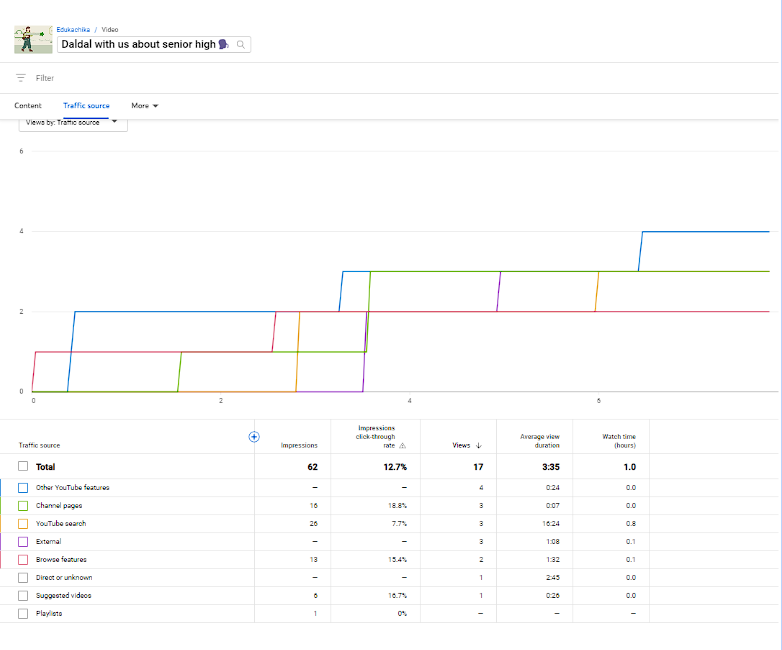
Figure 1:External sites or apps where viewers found the stream
This time, after exactly one week of doing the livestream– the group had sixty two (62) impressions, and a 12.7% impression click-through rate. Therefore, only seven (7) of the sixty two (62) viewers viewed the group’s live stream. The group had fourteen (14) views since the stream was published. Nine (9) is the peak number of viewers that the group had. Lastly, the group peaked at the four-minute mark, wherein the mention of a fifty peso gcash giveaway was being mentioned at the very beginning of the stream.
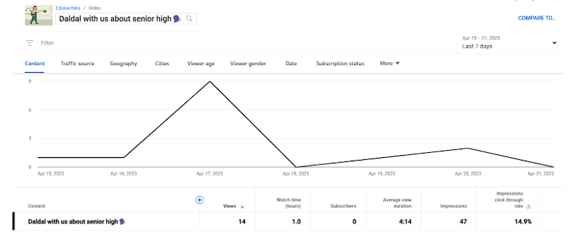
Figure 2:Video Analytics of Edukachika’s “daldal with us about senior high” live
Stream Feedback
The group received over twenty-four (24) responses in their feedback survey. The survey was done via Google forms, and had sixteen (16) questions. The interpretation of data is shown below.
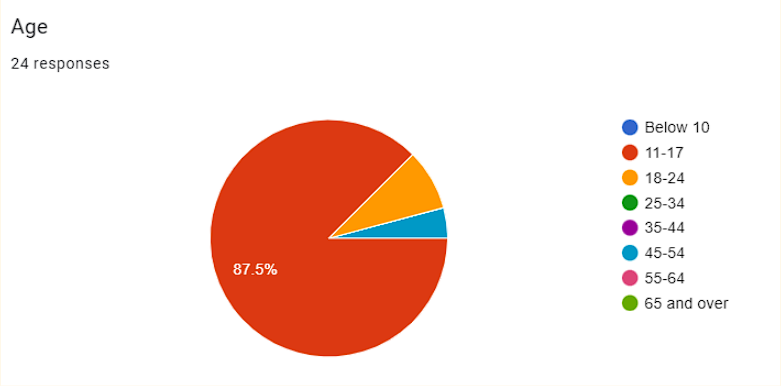
Age demographic of viewers
21 (87.5%) of the respondents had answered that they were 11-17 years of age, 2 (8.3%) had answered that they were 18-24 years old, and 1 respondent had mentioned that they were 45-54 years old.
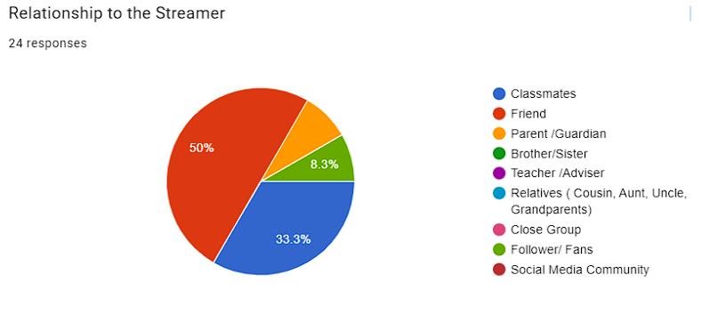
Relationship of Viewers to the Streamer
12 (50%) of the respondents are friends of the streamer/s, 2 (8.3%) are parent/guardian’s of the streamer/s, 2 (8.3%) of the respondents are fans/ followers of channel, and lastly, 8 (33.3%) are classmates of the streamer/s.
Percentage of New Information to the Viewers
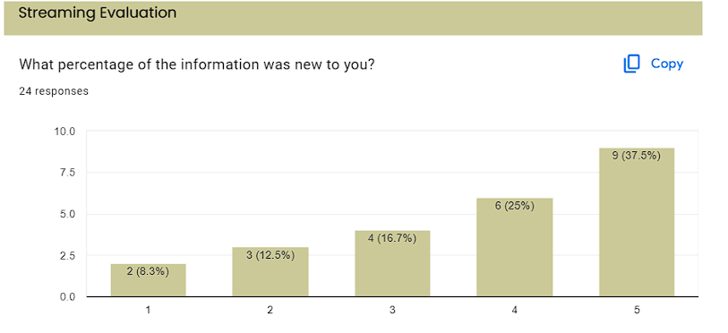
On a scale of 1-5 (1 being the lowest, and 5 being the highest), the group asked the respondents to rate how much information was new to them.
2 (8.3%) of the respondents have answered “1”, being none of the information in the live was new to them, 3 (12.5%) of the respondents had answered “2”, meaning a quarter of the information mentioned in the stream was new to them, 4 (16.7%) of the respondents answered “3”, meaning half of the information was new to them, 6 (25%) had answered “4”, meaning most of the information learned was new to them, and 9 (37.5%) ad answered “5”, meaning all of the information learned was new to them.
Application of information learned to the viewer’s lives
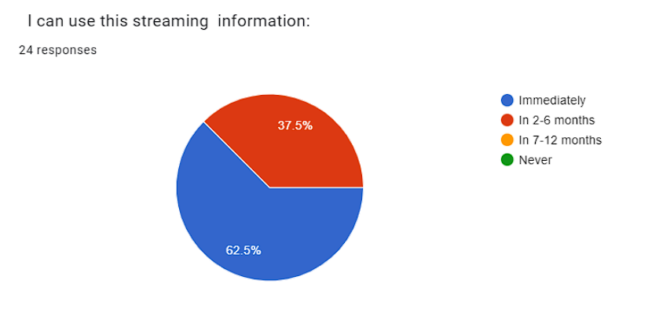
15 (62.5%) of the respondents will apply the information learned from the stream immediately, and 9 (37.5%) of the respondents will use the information in 2-6 months.
Interest of viewers in the streaming topic
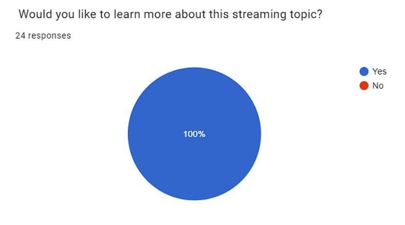
24 (100%) of the respondents were interested in the topic being streamed. Considering that most viewers are of the age of incoming SHS students, it would be no surprise that they would want to talk about their future.
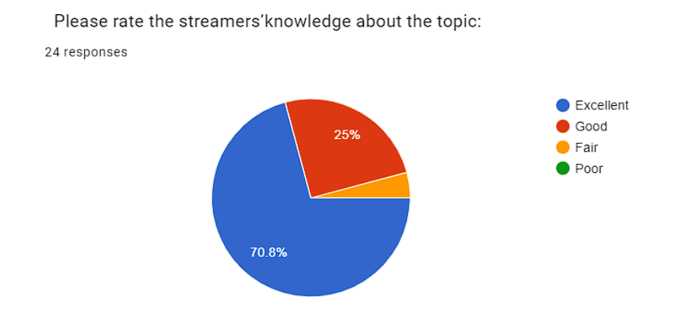
Rating of viewers on streamers’ knowledge of the topic
17 (70.8%) of the respondents had rated the streamers’ knowledge “Excellent”, 6 (25%) of the respondents had rated “good”, and 1 (4.2%) had rated “fair” in the streamers’ knowledge of the topic.
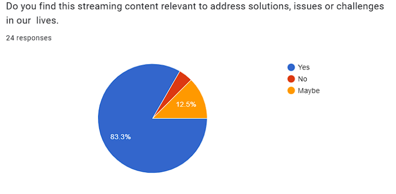
Relevance of streaming content
20 (83.3%) of the respondents had answered agreed that the livestream was relevant, 1 (4.2%) had disagreed, and 3 (12.5%) of the respondents had answered “maybe”.
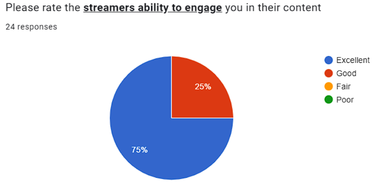
Viewers rating of streamers’ ability to engage
18 (75%) of the respondents had rated the streamers’ ability to engage “Excellent”, and 6 (25%) had rated the ability of engagement of the streamers’ as “good”.
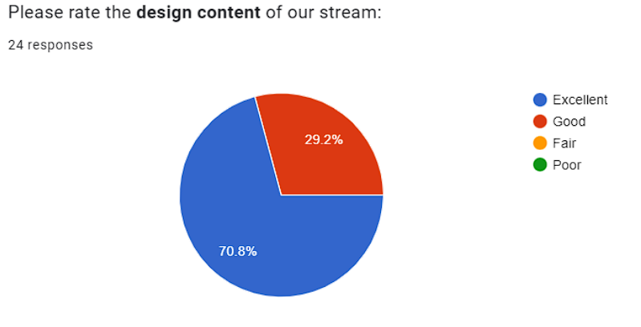
Viewers rating of streamers’ design content
17 (70.8%) of the respondents had rated the design “Excellent”, and 7 (29.2%) had rated the design as “good”.
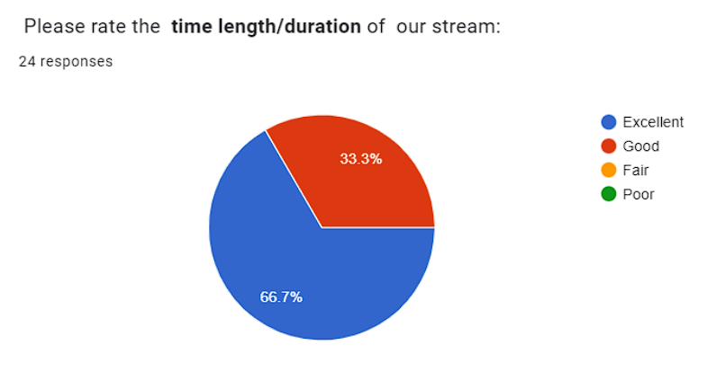
Viewers rating of streamers’ duration of streaming
16 (66.7%) of the respondents had rated the duration “Excellent”, and 8 (33.3%) had rated the streaming duration as “good”.
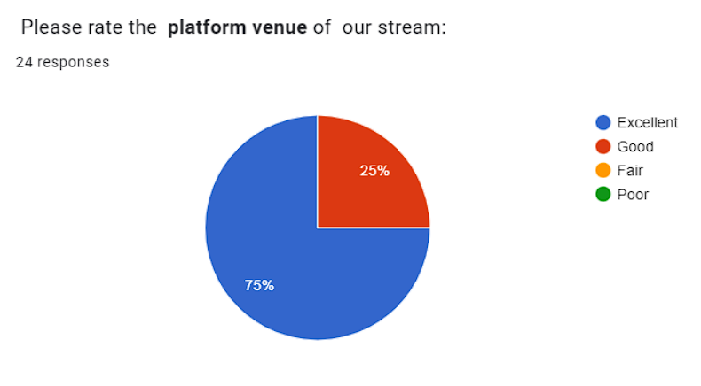
Viewers rating of streamers’chosen platform to livestream
18 (75%) of the respondents had rated the platform “Excellent”, and 6 (25%) had rated the platform as “good”. This is the reason, because Youtube is very accessible for everyone.
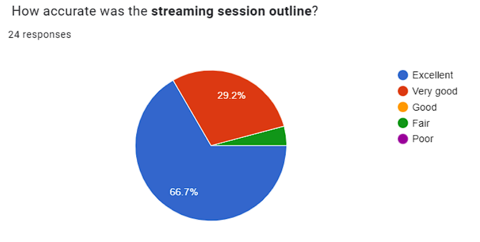
Viewers rating of streamers’ streaming session outline
16 (66.7%) of the respondents had rated the streaming session outline an “Excellent”, and 7 (29.2%) of the respondents had rated the streaming session outline “very good”, and 1(4.2%) of the respondents had rated the streaming session outline “fair”.
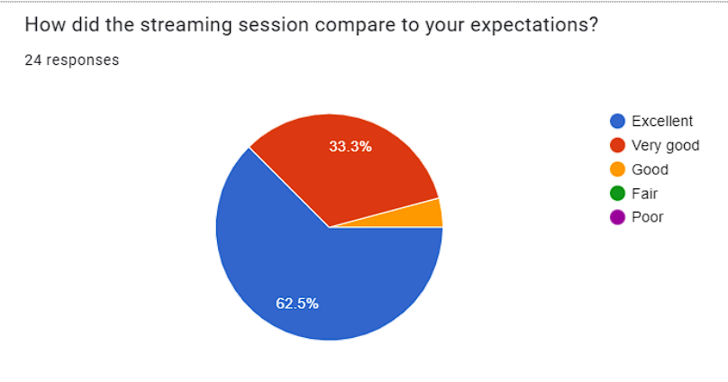
Viewers expectations being met
15 (62.5%) of the respondents’ expectations have been met, and 8 (33.3%) of the respondents had rated their expectations being met as “very good”, and 1(4.2%) of the respondents had rated the streaming session outline “good”.
21 (87.5%) of the viewer’s rated the overall stream as “excellent” and 3 (12.5%) of the respondents rated the overall stream as “very good”.
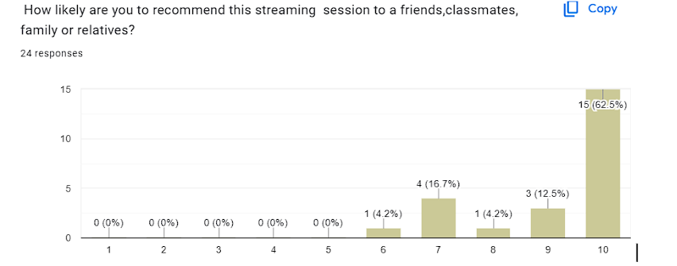
Viewers’ recommendation rating
On a scale of 1-10 (1 being the lowest rating, and 10 being the highest rating)-- the group surveyed the respondents of their likelihood to suggest the group’s stream to others. 1 (4.2%) of the respondents rated “6”, 4 (16.7%) of the respondents rated “7”, 1 (4.2%) rated “8”, 3 (12.5%) of the respondents rated “9”, and lastly, 15 (62.5%) of the respondents rated “10 ”.
Most of the viewers would recommend the group’s stream to others.
Many loved the stream, but 2 respondents have left comments saying that the group needs to improve on the stream layout. Also many have commented to improve the audio, and camera quality. The group has taken note of these comments.
IV. Conclusion: Why did EdukaChika gain 62 views in their stream?
There are numerous reasons as to why the team’s viewership was at this number. This number is lower in comparison to the first live stream. The group suspects this is the cause since it has only been one week since the livestream, in comparison to the previous livestream wherein it was scrutinized after two months. The number of viewers would still add in the coming days. However, so far the group is considering that this as a high viewership for a one week old stream.
Here are some factors as to why the group thinks this way:
The streamers themselves
With the member’s individual fun, quirky, and energetic personalities, it was no shock that their live stream has garnered over sixty-two views, since it was last streamed. With the personalities of each member, the team got to interact with the audience frequently and spontaneously. Furthermore, the members themselves were having loads of fun, despite talking about a topic that scares many junior high school students.
Visuals and layout of the stream
This stream, the overlay has changed, so that it can be easier for the tech team to fix everything.
Here are the overlays. The first overlay is the old overlay, and the second overlay is the group's current brand new overlay.
Interest of the viewers in the topic
Another reason could be the mere fact that the viewers themselves were interested in knowing whether study methods on Tiktok are truly effective for each member with different learning styles.
Advertising
Lastly, another benefactor as to why the stream has garnered views was due to the fact that the advertising was on point. The team has greatly put in effort in promoting the stream, and foot-trafficking.
The group is thankful that the viewers had enjoyed, and with that the stream was concluded.
As the school year comes to an end, a good livestream is what the group needs. It looked like the group and the viewers enjoyed the stream alot. The group reflected on their whole school year, the school year went well. Another thing to mention was before the stream ended the members were asked a hypothetical scenario– “Imagine that your future self is watching this very playback of the live stream, what would be your message to yourself ?”, the members all answered honestly, and many mentioned that they hope they are still okay in the future.
"As unbiased as possible, the group thought that the stream went well, and so did the viewers" (based on the feedback form).
MEET THE TEAM
Get to know the brains behind team EdukaChika! You may contact any of the group's members for any inquiries and concerns.
Click the Boxes Below to Reveal The Members
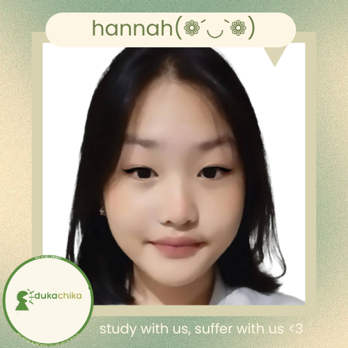
VALENZUELA, HANNAH NICOLE
📧Contact Me Via Google Chat or Email ap.hannahnicole.valenzuela@apecschools.edu.ph
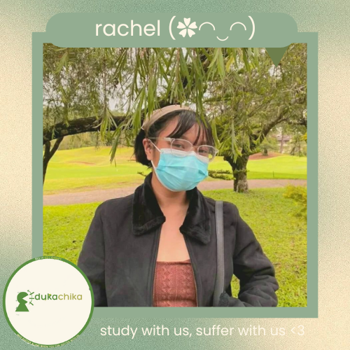
YANGAT, ESTER RACHEL
📧Contact Me Via Google Chat or Email ap.esterrachel.yangat@apecschools.edu.ph
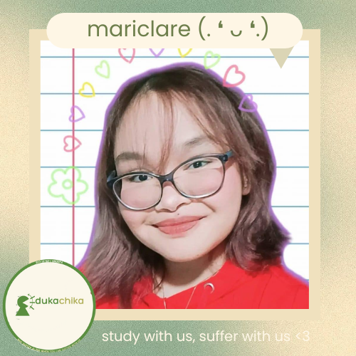
MAEN, MARICLARE JASTIN
📧Contact Me Via Google Chat or Email ap.mariclarejastin.maen@apecschools.edu.ph
CRUZ, JENNIFER AUDREY
📧Contact Me Via Google Chat or Email ap.ap.jenniferaudrey.cruz@apecschools.edu.ph@apecschools.edu.ph
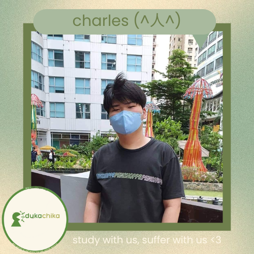
MARCELO, CHARLES GABRIEL
📧Contact Me Via Google Chat or Email ap.charlesgabriel.marcelo@apecschools.edu.ph
HIDALGO, SOFIA BIANCA
📧Contact Me Via Google Chat or Email ap.sofiabianca.hidalgo@apecschools.edu.ph